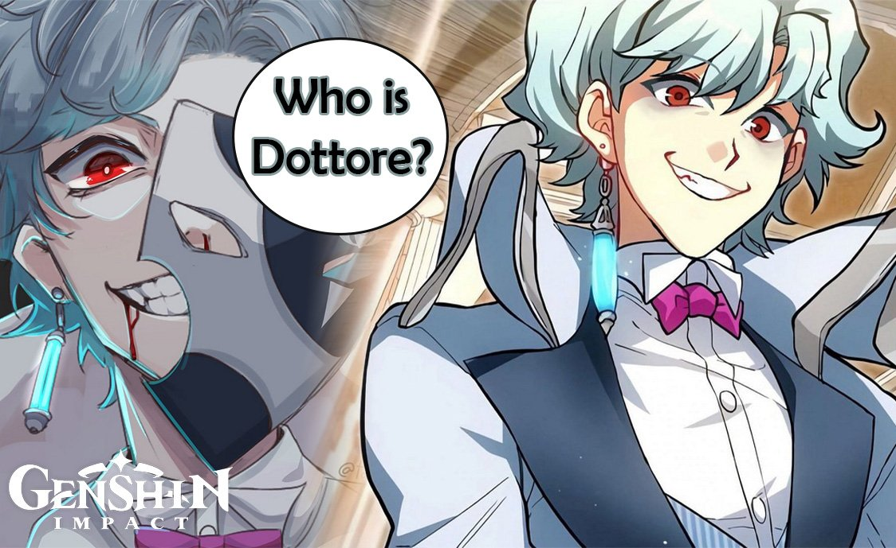

Студент:Литвин Фахраддинова
Дотторе, так же известный как Иль Дотторе — один из Предвестников Фатуи.
Дотторе — взрослый мужчина с красными глазами, бледной кожей и короткими, вьющимися голубыми волосами. Обычно он носит черно-белую маску, закрывающую две третьи всего лица, кроме правой щеки и половины рта. Символ Фатуи можно увидеть в верхнем левом углу этой маски. Дотторе одет в длинное белое пальто поверх белой классической рубашки и розового галстука-бабочки. Под ним он носит жилет в тонкую полоску и темные брюки.
Дотторе, учась в академии Сумеру, рассказывал свои бурные идеи другим, за что был прозван монстром и безумцем. Люди гнали его палками и вилами, после чего юноша пришёл к выводу, что «стиль работы академии не позволяет совершать прорыв в исследовании.» По слухам о сумасшедшем, первый Предвестник - Пьеро, нашёл его и предложил присоединиться к Фатуи. Он согласился и получил титул "Иль Дотторе", который находил весьма ироничным. После, Дотторе стал безжалостен и равнодушен к людским жизням. Со своим помощником Круппом он обходился жестоко, грозя ему своими экспериментами из-за неоднократных неудач и провалов в различных делах. Мужчина так же не проявил никакого интереса к гибели двух своих коллег - дипломатов Фатуи, во время инцидента с Черным пламенем. Дотторе пренебрежительно относится к людям с Глазом Бога, считая Глаза лишь "бесполезными безделушками". «Дотторе - один из Предвестников Фатуи. Он обожает ковыряться во всяком старье, такое у него хобби.» — Реплика Тартальи в задании легенд Приключение могучего Одноглазика! Вероятно, он интересуется Орденом Бездны и часто экспериментирует со Стражами руин, даже превратив Круппа в машину, подобную им.

Факультет бизнеса, ФБИ-03, 3 курс, 2022